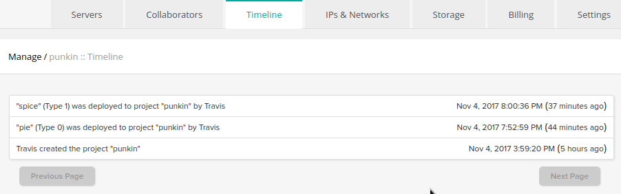
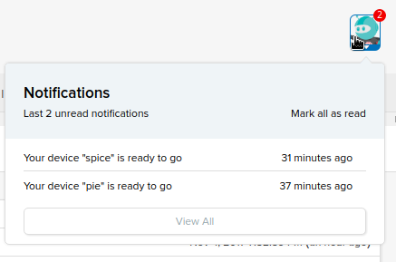

Bare Metal Packets
Posted by Travis Mattera in blog
I’ve been playing around with various cloud providers over the last couple months and can definitely attest that the experiences are different. I recently got an account with Packet.net, who granted me access after quick follow-up email from a support team member. I had to lodge a credit card account with them but I was also granted $25 in credit.
Immediately upon entering the site I’m prompted to start a project and moreover to invite collaborators to share access.
By the time I get to starting a machine I’m taken with the way the UI feels clean and simple, like DigitalOcean or Vultr. Then I clicked the small print next to the Type selection to help explain the rather vague listing:

Now I’m transported to an info page on Packet’s metal minions. This feels like checking out hotrods in a custom car shop. Is it already upon us? That longing for the thrill of a humming electromechanical machine over the quietude of virtualized digitization? Or maybe it’s just the imagining of the hulking beast growling at the other end of my ssh tunnel, what with 96 physical 2GHz cores* strapped to 128GB RAM and 250GB SSD not to mention 20GbE network connectivity.
* that’s the Type 2A: an ARMV8 for $0.50 and hour, complete with 2 x Cavium ThunderX processors-worth of action.

I started right in with a Type 0 mini running NixOS. It took a couple minutes… then a couple minutes more… then it apparently completed initialization sometime after I kicked up another server, this time a Type 1 running CoreOS in Amsterdam.
Along the way I discovered an interesting tool: an IaaS customizer, cloud-init, used to automate configuration of the OS environment. It advertises itself as a means to bring personality back into cookie-cutter boot images. Intriguing, I’ll have to revisit later.
Well, the Type 1 started without a hitch after 5 minutes. SSH’d in just fine.
From comparing the timeline

to the messages,

I got this simple non-statistically significant bit of data:
Server OS Location Time
------ -- -------- ----
Type 0 NixOS Sunnyvale,CA 9 min
Type 1 CoreOS Amsterdam, NL 6 min
Well, not nearly as fast as DigitalOcean or Vultr but about on par with my Scaleway experience. I’ll have to test it with a GlusterFS deployment to really compare.
Packet promises serious networking especially if you outfit your deployment with fiber connectivity called Direct Connect, though the price is not too cheap at $1500 installation, $0.25/hr for 1GbE optical and $2500 installation, $1.10/hr for 10GbE optical. The key aspect of the glass is that it shuttles your data to and from other large providers’ networks with reduced bottlenecks. The more I learn about Packet, the more I keep thinking their target market is HFT…